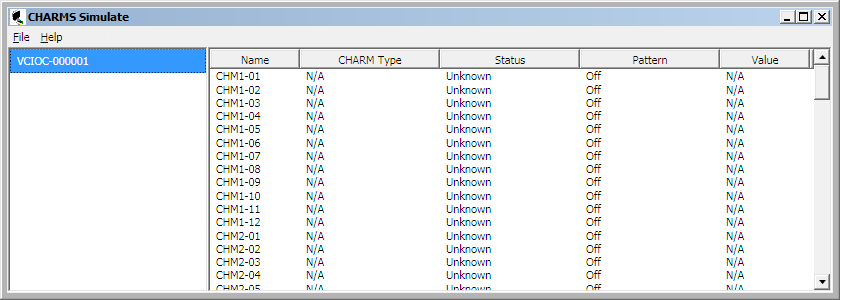
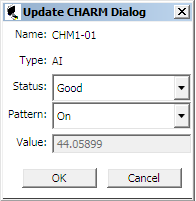

Use the CHARMs Simulate application
- Select Charms Simulate from the Start menu's DeltaV Engineering folder ().
- The CHARMS Simulate application opens.

The left pane of the CHARMS Simulate dialog lists the CIOCs in simulate mode. Select a CIOC in the left pane to list its CHARMs in the right pane. Double-click a CHARM to open the Update CHARM dialog. Use this dialog to modify the simulated CHARM's pattern, status, and value.

Pattern - Use this option to turn a waveform pattern (for example, Sawtooth or Square) On or Off for the selected CHARM. The pattern is based on the CHARM's signal type. Note that Pattern must be Off to write a value. When the Pattern is turned on, the CHARM's value increments by 1.
Value - Use this option to write a simulated value to the selected CHARM. Pattern must be Off to write a value.
Simulated writes to Value and Pattern are not supported for output CHARMs (AO and DO). Simulated writes to Status are supported for output CHARMs.